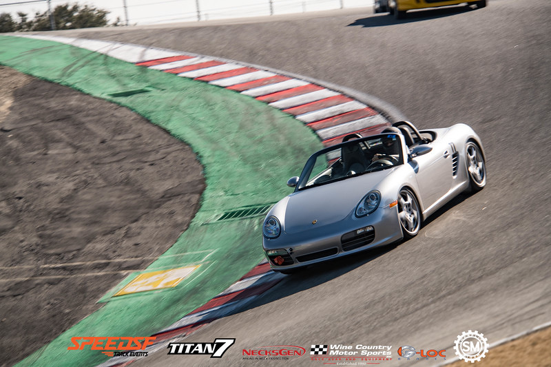

Vehicle Dynamics & Control Systems
15+ years of experience in vehicle dynamics development, testing, and validation
Professional Expertise
Track Development
Extensive experience in vehicle dynamics development with hundreds of hours of track testing. Specialized in:
- Vehicle characterization and tuning
- Tire model development and validation
- K&C testing and analysis
- Performance benchmarking
Tire Technology
Comprehensive tire model development and characterization for:
- Passenger vehicles
- Commercial trucks
- Performance applications
- Autonomous vehicle systems
Patents & Publications
Selected Patents
Inventor of 20+ technical patents with SKF, Volvo, Apple, and Waymo in mechatronics and autonomous systems.
Waymo LLC
Apple Inc
Earlier Patents
Key Publications
Latest Research
Systems Engineering for Autonomous Vehicles; Supervising AI using Large Language Models (SSuperLLM)
2024
Best Paper Award
Haptic Steering Support when Driving at the Tires' Cornering Limits
AVEC12, Seoul, Korea
2012
Selected Journal Papers
- Driver Steering Override for Lane-Keeping Aid using Computer-Aided Engineering IEEE/ASME Transactions on Mechatronics 2015
- Haptic Steering Support for Driving Close to the Vehicle's Handling Limits IEEE Transactions on Intelligent Transportation Systems 2014
- Road Departure Prevention in an Emergency Obstacle Avoidance Situation IEEE Transactions on Systems, Man, and Cybernetics 2014
Formula Student TUC
Academic Leadership & Team Achievement
As Academic Advisor for the Formula Student TUC (FSTuc) team at Technical University of Crete, I led the 2024 team through their remarkable journey from concept to competition. Under the leadership of Team Captain Andreas Agiotis, our dedicated group of students successfully:
- Engineered and designed their first single-seater vehicle
- Managed complete manufacturing and assembly
- Achieved a significant milestone by bringing a functional car to the track
- Competed at the prestigious Autodromo Varano de' Melegari